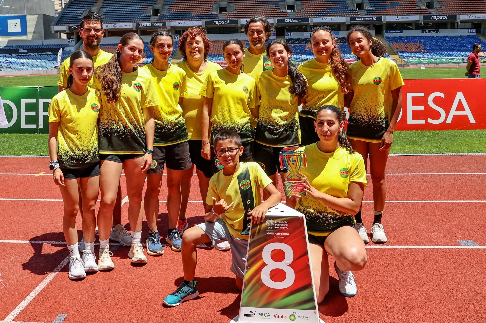

A equipa feminina do Clube Atletismo de Marinha Grande (CAMG) esteve presente na final de clubes da 3ª divisão, disputada no Estádio Municipal de Coimbra, tendo terminado a prova num meritório 8º lugar, num total de 41 equipas inscritas e 24 a competir. Trata-se de uma equipa muito jovem, com várias atletas ainda com pouca experiência competitiva, e para algumas delas esta foi mesmo a primeira presença numa final de clubes. Apesar da inexperiência, o balanço da prestação é muito positivo: a equipa venceu algumas provas, cresceu enquanto grupo de atletas e honrou a camisola do clube do início ao fim. Estamos orgulhosos! Saímos de cabeça erguida com a promessa de que nos vamos reforçar e voltaremos mais fortes. Destacamos ainda a felicidade pelo empenho demonstrado por todas as atletas envolvidas. O Clube Atletismo de Marinha Grande deixa uma palavra de apreço a todas as atletas que representaram o clube nesta final, com a certeza de que esta é uma equipa em crescimento e com um futuro promissor pela frente. Fizeram parte da equipa: Matilde Angélico, Bruna Silva, Luana Alexandre, Mariana Peralta, Catarina Ferreira, Sara Pereira, Mariana Bento, Diana Vatula, Joana Bagagem, Joana Caseiro, Camélia Terentiy, Marta Ferreira, Cláudia Rolo, Adriana Gonçalves. Agradecemos a todas o empenho e dedicação.
Equipa Feminina Conquistou 8º Lugar no Nacional de Clubes - 3ª Divisão
A equipa feminina do Clube Atletismo de Marinha Grande (CAMG) esteve presente na final de clubes da 3ª divisão, disputada no Estádio Municipal de Coimbra, tendo terminado a prova num meritório 8º lugar, num total de 41 equipas inscritas e 24 a competir.
